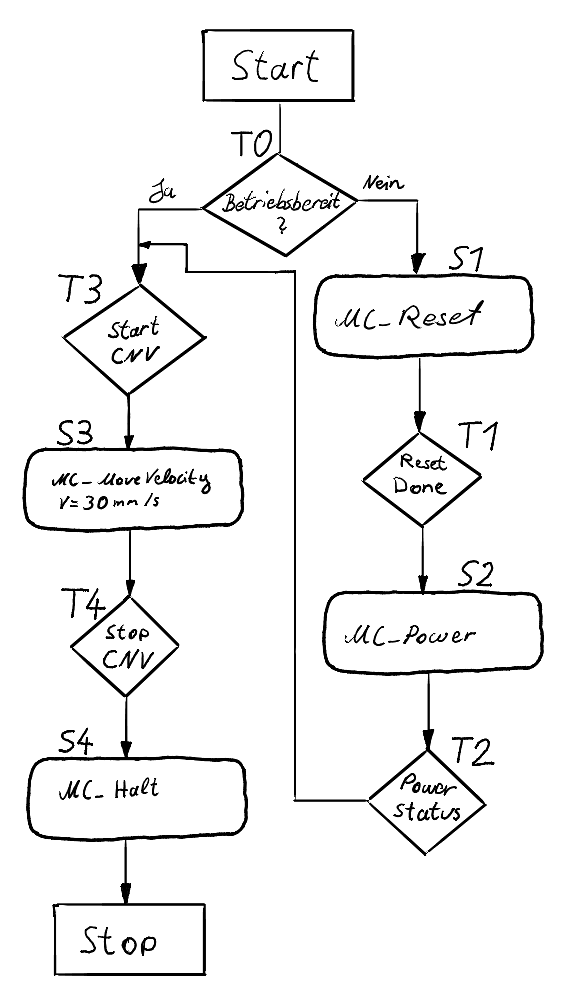
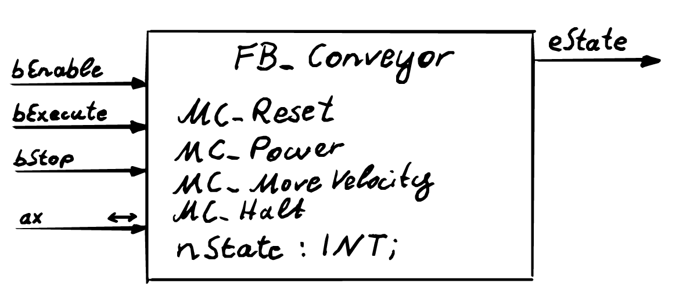
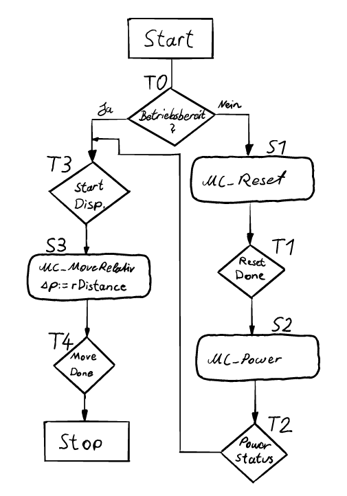
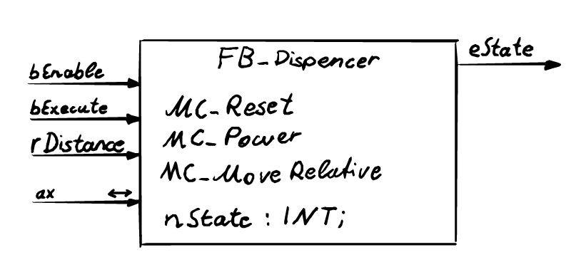
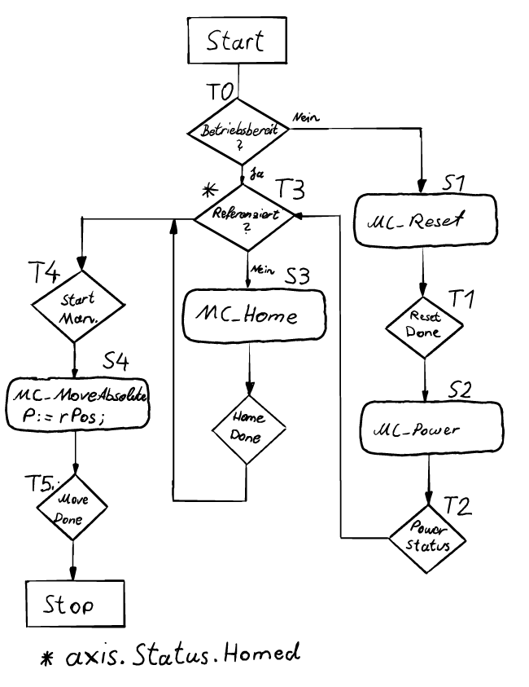
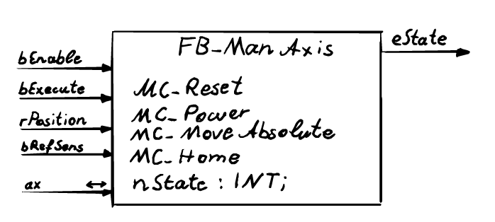

SoSe 2024 Serafin Kollegger & Julian Huber
Motorsteuerung
TwinCAT Motion Baukasten Tc2_Mc2 Motion-Bibliothek Beispiel Förderband

Förderband

Blockschaltbild der Förderbandsteuerung

Dispenser

Blockschaltbild der Dispenser-Steuerung

Manipulatorachsen

Langsame Referenziergeschwindigkeit = 15 mm/s
Blockschaltbild Manipulatorachsen-Steuerung
